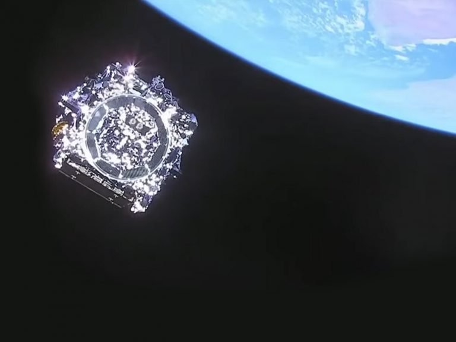
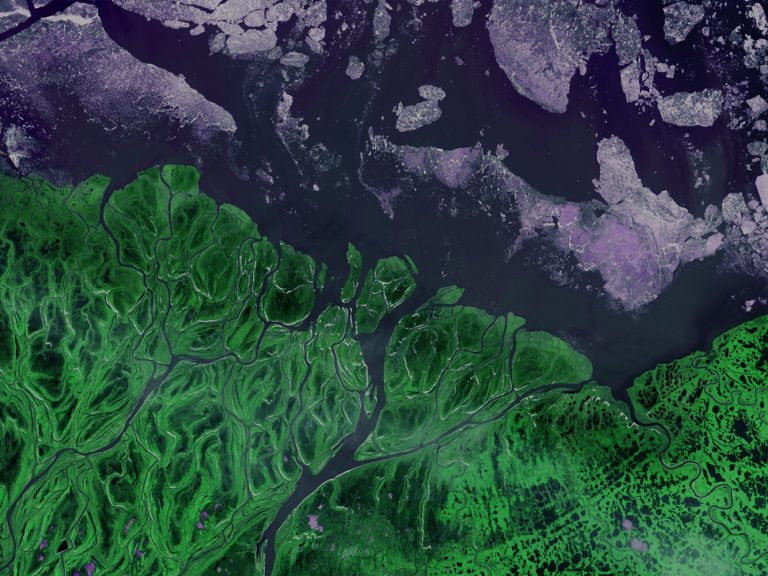
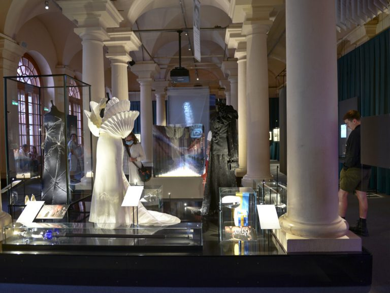

Nobel Prize Museum
|
 |
New Image Of Universe |
|
The Nobel Prize Museum welcomes astronomer Daniela Calzetti and Nobel Prize laureate Adam Riess who will show the first images from the James Webb Space Telescope. Join us on this day where science history is written. 12 July 2022, Nights at the Nobel Prize Museum |

|
Life Eternal - Nobel Prize Museum at Liljevalchs |
|
What is the meaning of your life? Do you dream of eternal youth? How should we adapt our lives so that we can survive on Planet Earth? Science, art and cultural history meet in the exhibition Life Eternal. 1 October 2022 – 29 January 2023 |

|
Evening hours on Fridays this summer with guided tours and DJs! |
|
Come by for a glass in Bistro Nobel - we are open every Friday night all summer! Different DJs from Stockholm set the mood. Friday nights all summer of 2022, Nobel Prize Museum |
|  |
Nobel Prize Teacher Summit |
|
Humanity is facing an unprecedented challenge. We have the facts and we know that we need to act. But how? Teachers and school leaders from all over the world are invited to participate. 30 September 2022, Stockholm |
|  |
The Nobel Prize banquet – behind the scenes |
|
We welcome you to an exhibition where you can get a sense of what it feels like to attend the gala. The food, the clothing, the decorations and the laureates’ speeches are in the spotlight. August 2021 - February 2023, Nobel Prize Museum |
The Nobel Prize shows that ideas can change the world. The courage,
creativity and persistence of the Nobel Laureates inspires us and gives us
hope for the future. Based on the Nobel Prize’s unique combination of
fields – natural sciences, literature and peace – we would like to invite
you to exhibitions, school programmes, lectures and dialogues about the
great issues of our time. We are a small museum with vast content. With
the help of videos, donated artifacts and in-depth guided tours you meet
freedom fighters, writers and scientists who all contributed to the
greatest benefit to humankind.